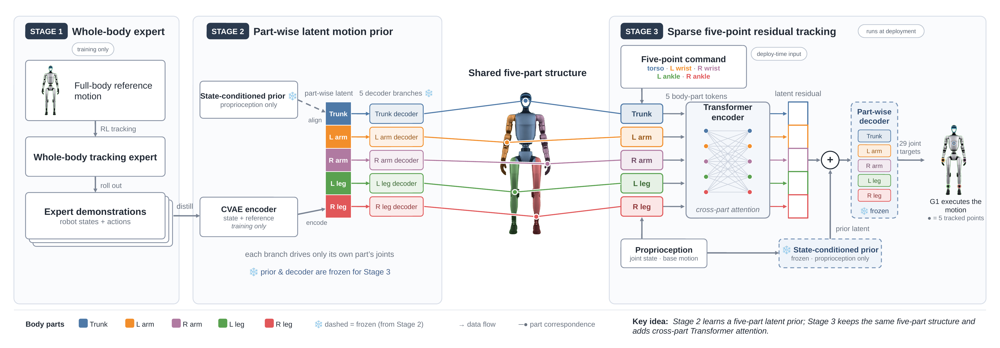

Humanoid motion-tracking policies are typically trained to follow dense whole-body references under nominal actuation, yet at deployment the command is often sparse and the hardware imperfect. We present SPARTA (Sparse Part-Aware Residual Transformer Adaptation), a three-stage framework that tracks sparse five-point commands, covering only the torso, wrists, and ankles, and remains robust when actuation degrades. A whole-body tracking expert is first distilled into a part-wise latent motion prior, a conditional variational autoencoder whose decoder factorizes across five body-part groups and whose state-conditioned prior needs no reference motion at deployment. A residual tracking policy then adapts this frozen prior: a body-part Transformer maps the command and proprioception to latent residuals through explicit cross-part attention, shifting the prior toward the commanded motion while the decoder remains fixed. Commands are expressed relative to the reference anchor, so tracking requires no absolute position or heading estimate. In simulation on a Unitree G1, SPARTA tracks novel combinations of upper- and lower-body motions unseen during training, and when one leg is passively weakened it re-routes load across body parts to survive external pushes, outperforming monolithic and non-part-aware baselines with a margin that grows with impairment severity and persists at severities never encountered in training.

Overview of SPARTA. Stage 2 learns a five-part latent prior; Stage 3 keeps the same five-part structure and adds cross-part Transformer attention.
Box carrying
Box carrying with right-wrist damping
Box carrying with right hip-roll damping
Box carrying with left-elbow locking
Box pushing
Box pushing with right ankle-roll damping
damping left ankle roll joint
damping right hip yaw joint
damping right ankle roll joint
damping right ankle pitch joint
lock left knee
lock left hip roll joint
@article{ji2027sparta,
author = {Ji, Ziteng and Hong, Chuye and Shao, Yiyang and Sreenath, Koushil},
title = {{SPARTA}: Sparse Part-Aware Residual Transformer Adaptation for Robust Humanoid Motion Tracking},
journal = {In-submission},
year = {2027},
}